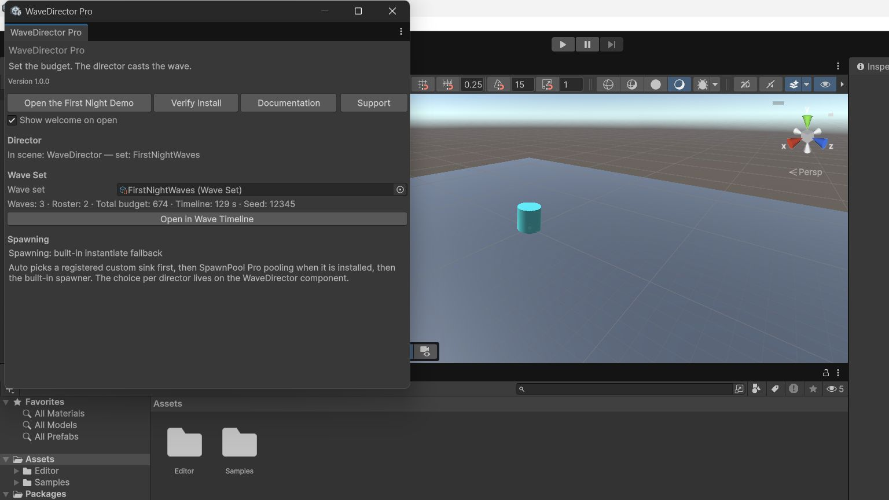
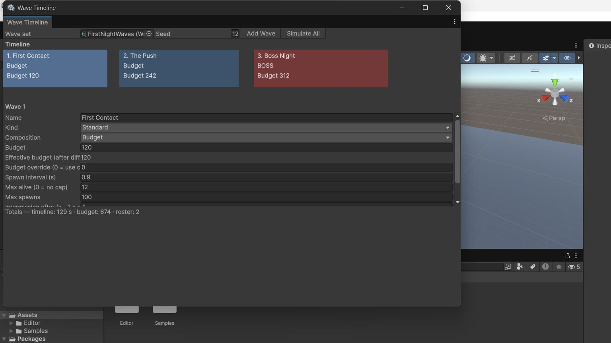
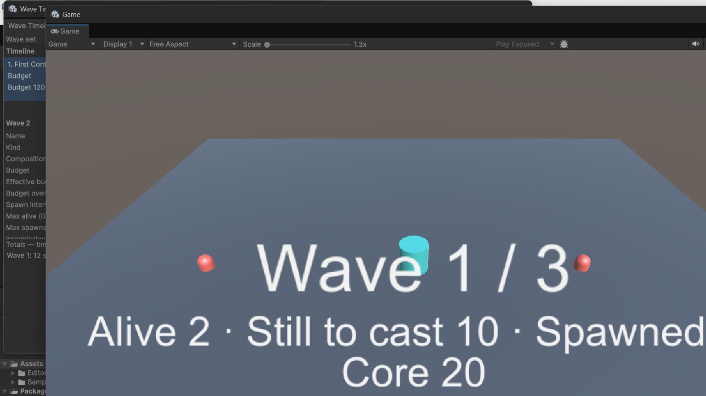
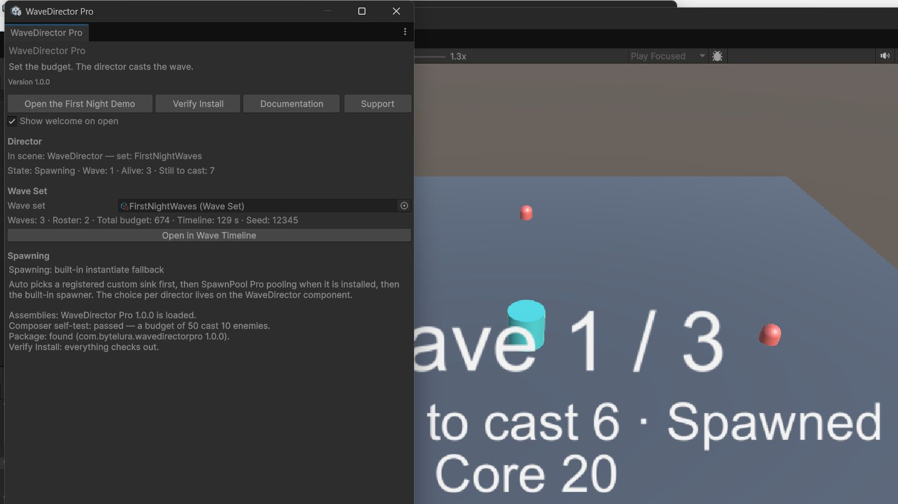
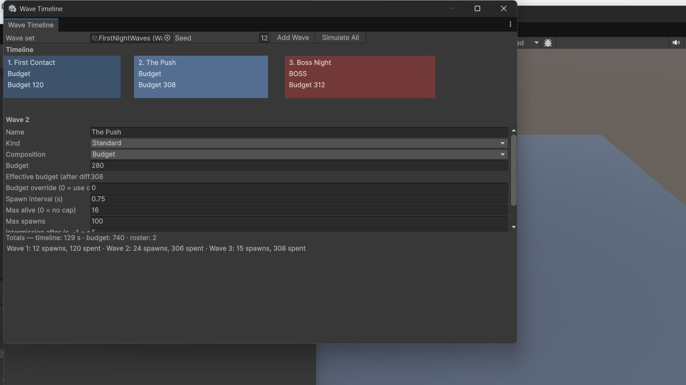

WaveDirector Pro
Wave composition, pacing and boss waves for Unity — directed by budgets, a roster and a timeline, not by hand-typed spawn lists.
WaveDirector Pro is a wave system for survival, tower-defence, and horde games in Unity. It directs waves instead of only spawning them:
- Each wave is composed to a threat budget. You set what a wave may cost; the composer casts it from your archetype roster.
- Difficulty is a curve over budgets — flat, linear, or exponential — instead of hand-counted spawn lists and code constants.
- The whole run is arranged on a visual timeline: waves, intermissions, and boss waves as blocks you can see and edit.
- Runs are deterministic: the same wave set, the same seed, and the same wave index produce the same spawn queue, on every machine. A balance complaint can be reproduced exactly.
- It works fully standalone with a built-in spawner. Pooling through a separate pooling product is an optional bridge — see Spawn Sinks.

Who it is for
A developer whose waves currently live in hand-typed lists — “wave 7 is 12 of these, 4 of those” — where difficulty is whatever the lists happen to add up to, and every balance change is a code edit followed by a full replay. WaveDirector Pro replaces the lists with budgets, a roster, and a timeline.
The five ideas
- Budget — what a wave may cost. The composer casts the roster to fit.
- Archetype — an enemy kind: prefab, threat cost, composition weight, and the first wave it may appear in.
- Wave set — the roster plus the ordered waves, the difficulty settings, the default intermission, and the seed.
- Timeline — the whole run as blocks. Edit numbers there, not in code.
- Seed — same set + same seed = the same waves, on every machine.
Honest scope
The limits are printed so they are a feature of the documentation, not a surprise in a review. In short:
- Not an enemy system. No enemy movement, health, or damage ships in the runtime, and no enemy behaviour logic of any kind. The director casts and paces; your game plays the enemies.
- Not a networking product. Hooks only: a spawn-authority flag, events, and a wave snapshot your own networking can carry. No transport, no prediction, no lobbies.
- Not adaptive. The director never reads player performance and never changes a budget at runtime. Difficulty is the authored curve, executed exactly — that predictability is the point.
- Pooling is a separate product. The pooled spawning path works through an optional bridge to SpawnPool Pro, which is not included in this package. Out of the box, and by default, spawning runs on the built-in standalone spawner.
The full list is on the Honest Limits page, in the same words the product uses.
Screenshots




In this documentation
- Quick Start
- Installation and Setup
- Authoring Model
- Difficulty Budgets and Composition
- Pacing, Intermissions and Boss Waves
- Spawn Sinks
- Timeline Editor
- Determinism and Seeds
- Sample Guide: First Night
- API Summary
- Honest Limits
- Troubleshooting and Support
Support
Support: bytelura@gmail.com. When you write, include your Unity version, the wave set and seed involved, and the exact warning text — with a set and a seed, the cast you saw is the cast that can be reproduced.